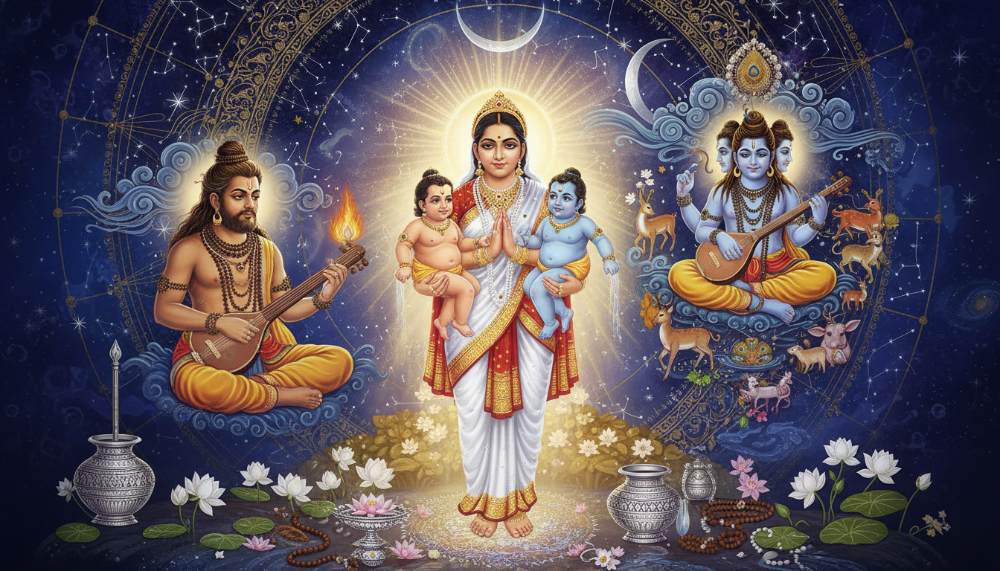

1. Introduction: The Couple Who Bounded the Trinity
In the vast constellation of Vedic mythology, few stories carry the weight of Sage Atri and Mother Anasuya. This is the story of how a single pativrata woman, through the sheer force of her chastity and devotion, transformed the three supreme gods of creation, preservation, and dissolution into helpless infants. It is the story of how one Saptarishi lineage produced the Moon god Chandra, the supreme Avadhuta Guru Dattatreya, and the terrifying tantric master Durvasa. And it is a story that holds the key to some of the most powerful and lesser-known remedial practices in Vedic astrology, from Chandra Dosha healing to the Dattatreya Natha lineage of occult liberation.

The Puranas, the Bhagavata, the Markandeya, and the Shiva Purana all converge on this narrative from slightly different angles, but the core remains unchanged: when Anasuya sprinkled the charanamrita of her husband on the three disguised Trimurtis who demanded Nirvana Bhiksha, they were instantly reduced to wailing babies. Her chastity was not merely moral purity. It was an occult force that could rewrite cosmic law.
For the reader of this blog, this is not merely mythology. The Atri-Anasuya story encodes living remedial technology that practitioners of Jyotish and Tantra have used for millennia, from the Chandra-Soma remedy for lunar afflictions to the Anasuya charanamrita technique for neutralizing curses, from the Dattatreya 24-Guru sadhana for self-realization to the Durvasa krita reversal for black magic defense. This is a guide to that technology.
—
2. Atri: The Seer of Rig Veda Mandala 5
Atri is one of the seven Saptarishis of the current Vaivasvata Manvantara, alongside Agastya, Bhardwaja, Gautama, Jamadagni, Vashistha, and Vishwamitra. He is a manasaputra, a mind-born son of Brahma, and the Brihadaranyaka Upanishad tells us that each Saptarishi symbolizes one sense organ of Brahma. Atri symbolizes the tongue, which emphasizes his wisdom, his mastery of Vedic mantra, and his role as the most prolific Rishi of the Rig Veda.
The entire fifth Mandala of the Rig Veda is called the Atri Mandala in his honor. It contains 87 hymns attributed to Atri and his descendants, the Atreyas. These hymns are addressed to Agni, Indra, the Vishvedevas, the Maruts, Mitra-Varuna, and the Ashwini Kumars. Scholars such as Geldner consider Rig Veda 5.44 to be the most difficult riddle hymn in the entire corpus, a verse that plays with the flexibility of Sanskrit grammar to encode multiple layers of meaning simultaneously.
Atri also appears in the Ramayana, when Rama, Sita, and Lakshmana visit his hermitage at Chitrakuta during their exile. Anasuya gives Sita a divine robe and heavenly ornaments, a gift that carries the protective power of the pativrata. The Shiva Purana credits Atri and Anasuya with bringing the river Ganga down to earth.
—
3. Anasuya: The Iron Ball That Fried
The name Anasuya literally means "without envy or jealousy." She is universally quoted as the supreme model of pativrata dharma, the discipline of wifely devotion in which the husband is regarded as God himself. But her power was not abstract piety. It was a measurable, testable, occult force.
The most famous illustration is the story Narada carried to the three goddesses. Narada took a small iron ball, the size of a gram grain, to Saraswati, Lakshmi, and Parvati in turn, asking each to fry it. All three laughed. An iron ball cannot be fried. Narada then went to Anasuya and made the same request. Anasuya placed the iron ball in a frying pan, meditated on the form of her husband, and sprinkled a few drops of water from washing Atri's feet over the iron. The iron ball was instantly fried. Narada ate the fried iron-gram before the three goddesses and praised the glory of Anasuya's chastity.
This is not a folk tale. It is an allegory for the alchemical principle that the charanamrita of a pativrata carries a vibrational charge capable of transmuting base matter. In tantric parlance, the pativrata has converted her prana into an extension of her husband's consciousness, and the water that touches his feet carries that concentrated frequency. The same principle would soon be applied to the Trimurtis themselves.
—
4. The Nirvana Bhiksha: How the Trinity Became Babies
Provoked by Narada's iron-ball demonstration, Saraswati, Lakshmi, and Parvati asked their husbands to test Anasuya's pativrata dharma. The test was specific: they should appear before Anasuya as sannyasins and ask her for Nirvana Bhiksha, alms given while the donor is unclothed. This put Anasuya in an impossible bind. She could not refuse the sannyasins, for refusing alms is a sin. But she could not appear naked before men other than her husband without violating her pativrata dharma.
The Trimurtis, knowing through their divine vision that this test would also fulfill Anasuya's long-standing wish to bear sons equal to the three gods, agreed. They put on the garb of wandering ascetics and appeared at Atri's hermitage while the sage was away for his bath.
Anasuya resolved the paradox with a single act. She meditated on the form of her husband, took refuge at his feet, and sprinkled a few drops of charanamrita, the water used to wash Atri's feet, over the three sannyasins. Instantly, the Trimurtis were transformed into three wailing infants. The power of the pativrata had stripped them of their cosmic identities and reduced them to the state of helpless babies. At the same moment, milk accumulated in Anasuya's breasts. She nursed the three infants naked, cradled them, and waited for her husband to return.
When Atri arrived, he already knew everything through his divine vision. He embraced the three children, and they merged into a single child with two feet, one trunk, three heads, and six arms, the iconic Dattatreya form. The Trimurtis then appeared in their true form and declared: "This child will be a great sage according to your word, and will be equal to us according to the wish of Anasuya. This child will bear the name of Dattatreya." Then they disappeared.
But the boon was not for one son alone. As the Shiva Purana and Markandeya Purana clarify, Anasuya's wish was for sons equal to all three. Thus three sons were born: Soma (Chandra, the Moon) as a portion of Brahma, Dattatreya as a portion of Vishnu, and Durvasa as a portion of Shiva. The Atri lineage thus became the only family in Vedic mythology to contain incarnations of all three members of the Trimurti.
—
5. Chandra: The Moon God as Son of Atri
Chandra, the Moon god, was born as the amsha, the partial manifestation, of Brahma through Anasuya. The Markandeya Purana describes how Atri's mental seed was seized by the ten directions of the sky, and the white-lustred form of Brahma fell all around in the form of Soma, characterized by passion. This Soma was begotten in Anasuya as the son of Atri, the life and possessor of every excellence.
Chandra was appointed by Brahma as the king of seeds, herbs, water, and Brahmins. He nourishes the life forces of all beings. He is the repository of the 16 Kalas, the phases of luminous perfection that wax to fullness and wane to a single ray.
The mythology of Chandra holds the key to one of the most common astrological afflictions: Chandra Dosha. When the Moon is weak, debilitated in Scorpio, hemmed by malefics, or conjoined with Rahu, Ketu, or Saturn, the mind becomes restless, anxious, and prone to emotional flooding. The Purusha Sukta of the Rig Veda declares: "Chandrama manaso jatah", "From the Mind of the Supreme Being, the Moon was born." The Moon is the manas, the mental and emotional instrument.
Chandra later married the 27 Nakshatra princesses, daughters of Daksha Prajapati, but favored Rohini above all others. Daksha cursed Chandra to waste away completely. Only after Chandra's penance and the intercession of Lord Shiva was the curse softened into the monthly cycle of waxing and waning. In gratitude, Chandra rests eternally on Shiva's matted locks, giving the god his epithet Chandrashekhara, "the one crowned by the Moon."
—
6. The Chandra Dosha Remedy: Soma Worship Through the Atri Lineage
The Atri lineage provides the most direct remedial pathway for Chandra affliction. Because Chandra was born from Anasuya, the pativrata who represents the ultimate alignment of prana with the divine, the remedy for lunar affliction follows the same principles: purity, devotion, water, and white offerings.
The core practices prescribed in the classical texts for Chandra Graha Shanti are:
- Somvar Vrat (Monday Fast): Observe 10 or 54 Mondays. Wear white clothes. Consume salt-free foods made from curd, milk, rice, ghee, and sugar. Avoid salt, non-vegetarian food, alcohol, onions, and garlic.
- Shiva Abhisheka as Somanatha: Offer water, milk, and white flowers to a Shiva Lingam on Mondays. The milk bathing stabilizes the lunar frequency.
- Chandra Beej Mantra: "Om Sraam Sreem Sraum Sah Chandraya Namah". Chant 108 times daily (one mala), or 11,000 times for a full Chandra Anushthan. The Dashansh Havan requires 4,400 ahutis using Palasha wood.
- Panchagavya Snan: Bathe with the five cow products: milk, curd, ghee, urine, and dung. This pacifies the afflicted Moon through the Soma principle.
- 2-Mukhi Rudraksha: Wearing a two-faced Rudraksha strengthens the Moon's energy and harmonizes emotional fluctuations.
- Pearl (Moti): Wear a natural pearl set in silver on the little finger on a Monday after sighting the Moon. The pearl carries the lunar frequency directly. Never wear any gemstone without consulting a qualified Jyotishi.
- Donations: Donate white items on Mondays: rice, camphor, white clothes, silver, conch shell, white sandalwood, white flowers, sugar, curd.
- Silver Vessel Moon Water: Keep a silver vessel of water under moonlight overnight and drink it at dawn. This traditional folk practice carries the lunar imprint directly into the body.
The deeper principle is that Chandra is Kapha and Vata in Ayurvedic terms. A strong Moon supports healthy Kapha, tissue-building, emotional steadiness, and sound sleep. A weak Moon aggravates Vata, producing anxiety, dryness, restless mind, and broken sleep. The Ayurvedic support centers on warm milk with Ashwagandha or Shatavari, regular sleep routines, and grounding practices like Abhyanga, oil massage.
—
7. Dattatreya: The Avadhuta Who Had 24 Gurus
Dattatreya, the Vishnu amsha born to Atri and Anasuya, is one of the most enigmatic figures in Hinduism. The Puranas depict him as the paradigmatic sannyasi, the lord of yoga, and the combined avatar of the Trimurti. But the Natha tradition remembers him as something far more radical: the Adi Guru, the first teacher of the Adinath Sampradaya, the primordial yogi who wandered naked, drank wine, and transcended all categories of purity and impurity.
The Bhagavata Purana records the famous encounter between Dattatreya and King Yadu. When the king asked the secret of his happiness and the name of his guru, Dattatreya replied that the Self alone was his guru, yet he had learned wisdom from 24 teachers in nature:
- Earth: Forbearance and doing good to others even when injured
- Water: Purity that cleanses all who come in contact
- Air: Non-attachment while moving among all things
- Fire: Glowing with the splendor of knowledge and tapas
- Sky: The Self is all-pervading yet has no contact with any object
- Moon: The Self is always perfect and changeless; only the Upadhis cast shadows
- Sun: Brahman appears different through different bodies, like the sun in many pots of water
- Pigeon: Attachment is the root cause of bondage
- Python: Contentment with whatever comes, lying in one place (Ajahara Vritti)
- Ocean: Remain unmoved though hundreds of rivers flow in
- Moth: Control the sense of sight; fixation on beauty destroys
- Honey-gatherer (Bee): Take a little from many sources (Madhukari Bhiksha)
- Bees: Hoarding is futile; what is collected with trouble is taken by another
- Elephant: Lust blinds and leads to captivity
- Deer: Fascination with sound leads to destruction
- Fish: Greed for food leads to the bait and death
- Pingala (courtesan): Abandonment of hope leads to contentment
- Raven: Dropping the piece of flesh brings peace
- Child: Cheerfulness and freedom from care
- Maiden: Solitude prevents discord; even two bangles make noise
- Serpent: Live in holes made by others; do not build a home
- Arrow-maker: Intense concentration that does not notice a passing king
- Spider: Man makes a web of his own ideas and gets entangled; abandon it
- Beetle: Constant contemplation of the beetle transforms the worm into a beetle; so contemplate the Self
This teaching is not mere philosophy. It is the foundation of the Dattatreya sadhana: learning from every aspect of existence, extracting wisdom from the most unlikely sources, and recognizing that the guru is everywhere because the Self is everywhere.
—
8. The Avadhuta Gita: The Song of the Free Soul
The Avadhuta Gita, attributed to Dattatreya, is one of the most radical texts in the Hindu canon. It is a song of the free soul, the one who has cast off all bindings, including the binding of holiness itself. Swami Vivekananda held it in the highest esteem and translated portions of it in his talks. The text declares:
"I am thus the pure Shiva, devoid of all doubt. O beloved friend, how shall I bow to my own Self, in my Self?"
The Avadhuta Gita teaches that the self-realized person is "by nature, the formless, all-pervasive Self." It describes the state of sama-rasya, or samata, in which there are no differences between anything or anyone, neither one's own body nor another's, neither class nor gender, neither human nor other living beings, between the abstract and the empirical universe. All is one interconnected reality. "There is never any you and I," states verse 6.22.
The text introduces the concept of Sahaja, the nectar of naturalness, which became crucial in both Hindu and Buddhist tantric traditions. In Hinduism, Sahaja is the interior Guru within the person, the Sadashiva, the all-pervading ultimate Reality that is the Atman within.
For remedial practice, the Avadhuta Gita offers a crucial insight: the ultimate remedy is not ritual but the recognition that you were never bound. As Dattatreya teaches, the mind that seeks liberation is itself the bondage. The highest Chandra remedy is not just the mantra and the pearl, but the understanding that the Moon's fluctuations are not your fluctuations. The mind waxes and wanes, but the Self is always full.
—
9. Durvasa: The Krita Master and Curse Technology
Durvasa, the Shiva amsha born to Atri and Anasuya, is the most feared sage in Vedic mythology. The Markandeya Purana states that he was born "filled with indignation at the long pains and toil of his residence in the womb," and that darkness, Tamas, predominated in him. He is the master of the krita, the energetic construct or tulpa that a tantric practitioner creates from concentrated rage and mantra.
Durvasa's most famous encounter demonstrates the mechanics of curse technology. When King Ambarisha broke his Dvadashi fast by taking a sip of water before Durvasa returned from his bath, the sage pulled out a lock of hair that became a flaming krita, an energetic weapon that would have turned the king to ash. Only the Sudarshana Chakra, invoked through Ambarisha's devotion, could neutralize it.
But Durvasa's power was not purely destructive. The Draupadi sari episode reveals the other side of curse technology: when Durvasa was bathing naked in the Ganga and Draupadi tore a piece of her sari to cover him, he blessed her that the same cloth would extend infinitely to protect her. The Durvasa who curses is also the Durvasa who blesses, and the same energetic technology can be used for destruction or protection depending on the state of consciousness that wields it.
For remedial astrology, the Durvasa lineage carries the technology for both casting and reversing curses. When a person suffers from Shrapit Yoga, Pitru Shapa, or Abhichara Prayoga, the Durvasa energy is at work. The remedies in the Atri lineage include:
- Durvasa Mantra for Curse Reversal: "Om Durvasaya Namah" chanted 108 times with white sesame seeds, which are then offered to a Shiva Lingam. This reverses the energetic construct that a curse has embedded in the person's pranic field.
- Atri-Charanamrita Technique: The same principle Anasuya used on the Trimurtis. Sprinkle water from washing the feet of a living guru or a righteous elder on the afflicted person. The charanamrita carries the vibrational charge that can neutralize krita constructs.
- Durvasa Kavacha Visualization: Visualize a shield of dark blue flame around the body, inscribed with the Durvasa bija mantra, that absorbs and transmutes incoming negative energy. This is the protective application of the same Tamas energy that Durvasa embodies.
—
10. The Atri Samhita: Vaikhanasa Vaishnava Tradition
The Vaikhanasas, a sub-tradition within Vaishnavism found in South India near Tirupati, credit their theology to four Rishis: Atri, Marichi, Bhrigu, and Kashyapa. One of their ancient texts is the Atri Samhita, which survives in highly inconsistent fragments of manuscripts. The text discusses rules of conduct aimed at Brahmins of the Vaikhanasas tradition, including yoga and ethics of living.
The surviving precepts of the Atri Samhita include:
- Dama (Self-restraint): If material or spiritual pain is created by others, and one is not offended and does not wreak revenge, this is called Dama. This is the Atri approach to the Durvasa energy: do not retaliate, absorb and transmute.
- Dana (Charity): Even with limited income, something should be given away daily with care and a liberal spirit. This is the lunar principle of flow, the opposite of hoarding that the bees taught Dattatreya.
- Daya (Compassion): One should behave like one's own self toward others, one's relations and friends, those who envy one, and even one's enemies. This is the sama-rasya of the Avadhuta Gita in ethical form.
The Atri Samhita provides the ethical foundation for the Atri lineage's approach to remedial practice. Dama prevents the creation of new karmic debts. Dana opens the channels of lunar abundance. Daya dissolves the ego that is the root of all affliction.
—
11. The Tripura Rahasya: Dattatreya as Tantric Guru
The Tripura Rahasya, one of the most important texts attributed to Dattatreya, provides the strongest evidence of his integration into the Shakta Tantric tradition. In this text, Dattatreya acts as the Guru to Parashurama, instructing him not in Vedic rituals but in the esoteric worship of the Goddess Tripura, also known as Lalita or Lalita Tripurasundari, and the philosophy of non-dualism.
The setting is significant: Dattatreya is found meditating on the Gandhamadana mountain, a peripheral, wild space, rather than in a Vedic hermitage. This is the same liminal space where the Natha yogis would later practice, the boundary between civilization and the wilderness where the Tantric is free from social constraints.
The Tripura Rahasya is divided into three parts. The Mahatmya Khanda covers the origin, mantra, and yantra of the Goddess Tripura. The Jnana Khanda elaborates on consciousness, manifestation, and liberation. The Charya Khanda, the section on conduct, has been lost, and some believe it was deliberately destroyed because it contained the most esoteric practices.
For remedial practice, the Tripura Rahasya provides the Sri Chakra sadhana, the worship of the Sri Yantra as the unified form of all cosmic forces. The Sri Chakra is the geometric body of Lalita Tripurasundari, and its worship is one of the most powerful Tantric remedies for planetary afflictions, because it addresses not the individual graha but the entire cosmic pattern from which the grahas arise. When the pattern is harmonized, the afflictions resolve.
—
12. The Natha Sampradaya: From Dattatreya to Gorakshanath
The Natha Sampradaya, the tradition of warrior ascetics that spread across North and West India from the 11th century onward, considers Dattatreya their Adi Guru. The International Nath Order recognizes him as the avatar of Shiva and the first teacher of the Adinath Sampradaya.
The historical relationship between Dattatreya and the Natha tradition is complex. Antonio Rigopoulos, in his definitive study, shows that Dattatreya was originally a Tantric, antinomian yogin who was later sanitized and adapted to the devotional milieu of the Puranas. The Markandeya Purana preserves the earliest evidence: Dattatreya immersed himself in a lake for years, emerged with a beautiful woman and a bottle of wine, and continued his yogic absorption while drinking, singing, and making love. This is the Balunmada, the divine madness of the Avadhuta, the same state that the Pashupata and Kapalika ascetics practiced.
Gorakshanath, the great organizer of the Natha Sampradaya, did not reject Dattatreya but functionally subordinated him. At Mount Girnar in Gujarat, where both Dattatreya's footprints and Gorakshanath's dhuni are worshipped on adjacent peaks, the legend encodes the historical transition: Dattatreya represents the spontaneous, natural state of the Avadhuta, while Gorakshanath represents the disciplined, methodical path of Hatha Yoga. Dattatreya is the goal; Gorakshanath is the method.
The Dattatreya Yoga Shastra, dated to approximately the 13th century, is reputed to be the earliest work to teach both the eightfold system of Patanjali's classical Ashtanga Yoga and the methods of Hatha Yoga. This text bridges the Avadhuta and Natha approaches, offering both the direct path of recognition and the gradual path of bodily cultivation.
—
13. Planetary Transit 2026: Saturn in Pisces and the Atri-Soma Connection
The current planetary configuration of 2026 creates a unique window for the Atri-Soma remedies. Saturn is transiting Pisces, the sign of the water element, which is the natural domain of the Moon and the Soma principle. This transit amplifies the lunar vulnerabilities for those with Chandra afflictions, as Saturn's restrictive energy in the watery sign of Pisces can produce emotional compression, existential heaviness, and a sense of spiritual dryness.
At the same time, the Atri lineage's connection to the Purva Bhadrapada nakshatra, which spans the late degrees of Aquarius and early degrees of Pisces, means that the Saturn transit through Pisces is directly activating the Atri energetic field. This makes the Atri-Soma remedies particularly potent during this transit window.
The recommended practices for the 2026 Saturn in Pisces transit through the Atri-Soma lineage are:
- Daily Soma Abhisheka: Every Monday during the transit, offer milk and water to a Shiva Lingam while chanting the Chandra Beej Mantra. This stabilizes the lunar frequency under Saturn's pressure.
- Atri Sukta Recitation: Recite hymns from Rig Veda Mandala 5, particularly the hymns to Agni and the Vishvedevas, to invoke the Atri lineage's protective energy. The vibrational pattern of the Atri Sukta carries the same frequency that produced Chandra.
- Charanamrita Practice: If you have a living guru, receive the charanamrita, the water from washing the guru's feet, and drink it or sprinkle it on your crown. This is the direct application of the Anasuya technique that transformed the Trimurtis. For those without a living guru, the water from washing the feet of a Shiva Lingam serves the same function.
- Pearl in Silver: Wear a natural pearl set in silver on the little finger, activated on a Monday after moonrise with the Chandra Beej Mantra. The pearl carries the lunar frequency directly, and the silver provides the conductive matrix that allows it to integrate with the body's water element.
- Anasuya Vrat: For married women, observe a simplified version of the pativrata practice: on Mondays, meditate on the form of your husband, prepare food with devotion, and offer the first portion to the divine. This activates the same Anasuya frequency that can transmute iron into gram and gods into infants. For unmarried practitioners, the equivalent is devotion to the divine as the cosmic husband.
—
14. Ayurvedic Support: Rasayana for Lunar Healing
The Ayurvedic dimension of the Atri-Soma remedy is Rasayana, the science of rejuvenation. Since Chandra is the karaka of Kapha and Ojas, the body's deepest nourishing essence, lunar affliction depletes Ojas and produces the characteristic symptoms of anxiety, insomnia, and emotional instability.
The Atri lineage's Rasayana for lunar healing includes:
- Ashwagandha (Withania somnifera): The premier Vata-pacifying adaptogen. Take 1 teaspoon with warm milk at night. Ashwagandha stabilizes the nervous system and replenishes the Ojas that Chandra affliction depletes.
- Shatavari (Asparagus racemosus): The lunar herb par excellence. Its name means "she who has a hundred husbands," indicating its power to nourish the feminine, lunar, receptive principle. Take 1 teaspoon with warm milk morning and evening.
- Brahmi (Bacopa monnieri): The herb of the mind, the domain of Chandra. Take 300mg with ghee in the morning. Brahmi stabilizes the mental fluctuations that Chandra affliction produces.
- Shankhpushpi: A lunar herb that specifically targets the manas, the mental sheath. Take 1 teaspoon with warm water morning and evening.
- Sattvic Diet: Emphasize milk, ghee, rice, dates, almonds, and sweet fruits. Avoid pungent, bitter, and astringent tastes, which aggravate Vata. The Sattvic diet is the dietary equivalent of the Soma principle: cooling, nourishing, and mind-stabilizing.
- Abhyanga: Daily self-massage with warm sesame oil before bathing. This grounds the Vata that Chandra affliction aggravates and reconnects the prana with the physical body.
—
15. Lesser-Known Occult Practices of the Atri Lineage
Beyond the mainstream practices, the Atri lineage preserves several lesser-known occult techniques that are rarely discussed in public texts:
- The Atri-Anasuya Kavacha: Visualize a sphere of white light around the body, inscribed with the Atri bija mantra on the inside and the Anasuya bija mantra on the outside. This creates a dual-layered protection that operates on the principle of the pativrata: the inner layer is the husband's consciousness, the outer layer is the wife's devotion, and together they form an impenetrable field.
- The Soma Chakra Activation: Above the Ajna chakra, at the crown of the head, is a minor chakra called the Soma chakra, associated with the nectar of immortality. Visualize a white moon at this point, dripping amrita down through the chakras. This is the internal version of the Chandra-Soma remedy and is one of the most powerful practices for healing lunar affliction at the energetic level.
- The 24-Guru Nature Meditation: Go into nature and spend time with 24 different natural elements or creatures, as Dattatreya did. For each, ask: "What is this teaching me?" The practice reprograms the mind to learn from all of existence, dissolving the ego that is the root of all affliction. This is the Dattatreya approach to self-healing: the guru is everywhere.
- The Iron Ball Transmutation: For practitioners working with alchemical principles, the Anasuya iron-ball technique can be applied energetically. Hold an iron object, visualize the form of your guru or chosen deity, and sprinkle charanamrita over it. The practice transmutes the base energy of the iron into the refined frequency of the guru's consciousness. This is the occult application of the pativrata principle to material transformation.
- The Trimurti Baby Visualization: For practitioners working with curse reversal, visualize the person who has cursed you as a baby, helpless and innocent. This is the Anasuya technique applied to interpersonal energy: the same charanamrita that turned the Trimurtis into infants can dissolve the energetic constructs of any curse. The visualization of the aggressor as a baby neutralizes the charge of the attack.
- The Durvasa Fire Absorption: For advanced practitioners, sit before a fire and visualize all incoming negative energy being absorbed by the flames. Chant "Om Durvasaya Namah" and offer black sesame seeds into the fire. The fire transmutes the negative energy through the Tamas principle that Durvasa embodies, converting destruction into transformation.
—
16. The Dattatreya Datta Jayanti Sadhana
Datta Jayanti falls on the full moon day of Margashirsha, the month of the Mrigashira nakshatra. This is the most auspicious day for Dattatreya worship and the most powerful day for the Atri lineage's remedial practices. The recommended sadhana for Datta Jayanti:
- Brahmamuhurta: Wake at 4 AM. Bathe and wear clean white or yellow clothes.
- Dattatreya Puja: Light a ghee lamp before an image of Dattatreya. Offer white flowers, white sandalwood, and a mixture of milk and sugar. Chant "Om Dram Dattatreyaya Namah" 108 times.
- 24-Guru Remembrance: Recite the list of the 24 gurus and contemplate the lesson each one teaches. This is the Dattatreya approach to self-education and is the core of the Dattatreya sadhana.
- Avadhuta Gita Study: Read at least one chapter of the Avadhuta Gita. The first chapter is the most potent for beginning the process of recognition that the Self is already free.
- Fast: Observe a full or partial fast. Consume only milk, fruit, and water. Avoid salt, as salt carries the Rajo-Guna that disturbs the lunar frequency.
- Meditation: Sit in silence for at least one hour. The Dattatreya approach is not effort but effortlessness: simply rest in the awareness that you are already the Self. As the Avadhuta Gita states: "No thought, no word, no deed, creates a bondage for me. I am beyond the senses, I am knowledge and bliss."
- Charanamrita: If possible, visit a Dattatreya temple and receive the charanamrita. The most important Dattatreya temples are at Ganagapur (Karnataka), Mahur (Maharashtra), and Girnar (Gujarat).
—
17. The Philosophy of the Atri Lineage: Three Sons, Three Gunas, Three Paths
The Atri lineage encodes a profound philosophical teaching through the three sons of Atri and Anasuya. Each son represents one of the three Gunas and one of the three paths to liberation:
| Son | Guna | Deity | Path |
|---|---|---|---|
| Chandra (Soma) | Sattva | Brahma | Bhakti (Devotion) |
| Dattatreya (Datta) | Sattva-Rajas | Vishnu | Jnana (Knowledge) |
| Durvasa | Tamas | Shiva | Tantra (Occult Power) |
Chandra, the Sattvic son, governs the mind and the emotional nature. His path is Bhakti, the devotion that purifies the heart and stabilizes the lunar frequency. The Soma worship through fasting, white offerings, and Shiva Abhisheka is the Bhakti approach to lunar healing.
Dattatreya, the Sattva-Rajas son, governs the intellect and the faculty of self-inquiry. His path is Jnana, the knowledge that cuts through all ignorance and reveals the Self as already free. The Avadhuta Gita, the 24-Guru teaching, and the Tripura Rahasya are the Jnana approach.
Durvasa, the Tamasic son, governs the destructive and transformative powers. His path is Tantra, the occult technology that works directly with the energetic constructs of curse and blessing. The krita technology, the curse reversal practices, and the fire absorption techniques are the Tantric approach.
The genius of the Atri lineage is that it does not ask you to choose one path. It offers all three, because the same couple produced all three sons. The same charanamrita that transformed the Trimurtis into infants can be applied for Bhakti (Chandra healing), Jnana (Dattatreya recognition), or Tantra (Durvasa curse reversal). The practitioner chooses the path according to the nature of the affliction and the disposition of the seeker.
—
18. Practical Daily Practice: The Atri-Anasuya 40-Day Sadhana
For those who wish to undertake a systematic practice of the Atri lineage remedies, a 40-day sadhana is recommended. The number 40 corresponds to the traditional mandala period for establishing a new vibrational pattern:
Days 1-14 (Chandra Phase): Focus on lunar healing. Every Monday, perform Somvar Vrat. Daily, chant the Chandra Beej Mantra 108 times. Wear white clothes on Mondays. Offer milk to a Shiva Lingam or a representation of Shiva. Take Ashwagandha with warm milk at night. Avoid salt on Mondays. This phase stabilizes the mind and the emotional body.
Days 15-28 (Dattatreya Phase): Focus on self-inquiry. Daily, read one verse of the Avadhuta Gita and contemplate its meaning. Spend 20 minutes in nature, observing the 24 gurus. Chant "Om Dram Dattatreyaya Namah" 108 times. Practice the Soma Chakra activation by visualizing a white moon at the crown of the head dripping amrita. This phase awakens the recognition of the Self as already free.
Days 29-40 (Durvasa Phase): Focus on energetic clearing. Daily, perform the Durvasa fire absorption practice: sit before a candle or fire, visualize all negative energy being absorbed by the flame, and chant "Om Durvasaya Namah" 108 times. Offer black sesame seeds to the fire. Visualize anyone who has wronged you as a helpless baby and release the energetic bond. This phase dissolves the karmic constructs that bind you.
Day 40 (Integration): On the 40th day, perform all three practices in sequence: the Chandra puja, the Dattatreya meditation, and the Durvasa fire offering. Then sit in silence for one hour, resting in the awareness that the mind that seeks healing is already the Self that was never wounded. This is the Atri-Anasuya synthesis: the pativrata force that can transform the gods, applied to the transformation of the self.
—
19. Conclusion: The Family That Bounded the Infinite
The story of Atri and Anasuya is the story of how the infinite chose to be bounded by the finite. The Trimurtis, the three gods who create, preserve, and dissolve the universe, chose to be born as infants in the hermitage of a Saptarishi and his pativrata wife. The Moon god chose to be their son, and through that choice, gave humanity the remedial pathway for lunar affliction. The Avadhuta Guru chose to be their son, and through that choice, gave humanity the direct path of self-recognition. The tantric master chose to be their son, and through that choice, gave humanity the technology for curse and blessing.
The Atri lineage teaches that the most powerful remedial technology is not found in complex rituals or rare herbs. It is found in the quality of consciousness that a person brings to their daily life. The charanamrita that transformed the Trimurtis was not a special substance. It was ordinary water, charged with the extraordinary power of a woman's devotion. The 24 gurus who taught Dattatreya were not special teachers. They were ordinary natural phenomena, seen with the extraordinary vision of a mind that was willing to learn from everything. The krita that Durvasa wielded was not a special weapon. It was concentrated consciousness, the same consciousness that, when directed toward the Self, becomes liberation.
As the Avadhuta Gita declares: "There is neither existence nor non-existence, all is Atman. Shake off all ideas of relativity; shake off all superstitions; let caste and birth and Devas and all else vanish. Why talk of being and becoming? Give up talking of dualism and Advaitism! When were you two, that you talk of two or one? The universe is this Holy One and He alone."
The Moon waxes and wanes, but the Self is always full. The curse burns, but the Self is never burned. The guru teaches, but the Self was always the guru. This is the secret of the Atri-Anasuya lineage: that the power which bounded the Trimurti is the same power that liberates the soul. And it is available to anyone who is willing to live with the devotion of Anasuya, the wisdom of Atri, and the recognition of Dattatreya.
Sources
- The Birth of Dattatreya - Markandeya Purana Canto XVII (Wisdom Library)
- Shiva Purana - Trinity blesses Sage Atri and Anasuya (Kamakoti)
- Dattatreya - Divine Life Society (Swami Sivananda)
- Dattatreya Jayanthi - Divine Life Society
- Atri - Wikipedia
- Dattatreya - Wikipedia
- Avadhuta Gita - Wikipedia
- Moon (Chandra) in Vedic Astrology - Varanasi Pooja
- Chandra Graha Shanti - Online Jyotish
- Chandra Dosha - GrahAI Intelligence
- Chandra (Moon) - RashiDaily
- Chandra Vedic Astrology Planet Guide - Satyori
- Shri Dattatreya Adiguru - International Nath Order
- Dattatreya - Oxford Bibliographies (Antonio Rigopoulos)
- The Bifurcation of the Avadhuta - Surya Prakasha
- Anasuya - Wikipedia
- Durvasa - Wikipedia
- Natha Sampradaya - Wikipedia
- Tripura Rahasya - Wikipedia
- Dattatreya Yoga Shastra - Wikipedia
- Gorakhnath - Wikipedia
- Mount Girnar - Wikipedia
- Sripada Srivallabha - Wikipedia
- Narasimha Saraswati - Wikipedia
- Shri Guru Charitra - Sri Datta Sai Spiritual Centre
- Vaikhanasas - Wikipedia
- Chandra - Wikipedia
- Rohini - Wikipedia
- Daksha - Wikipedia
- Pearl (Moti) - Wikipedia
- Rudraksha - Wikipedia